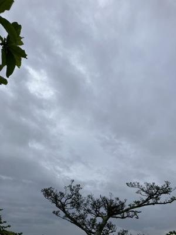
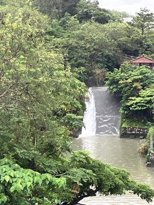

うるがいの話 ある日
最新: 辞書を買いました【うるがいの話 ある日】とは 一日だけのプログです
『うるがいの話』の最新一日だけのプログで、通信料が少なく経済的だ。カニの画像をクリックすると全ての日付が載る『うるがいの話』サイトを表示します
|
|
【うるがいの話】 うるがい(ｳﾙｶﾞｲ urugai)とは、『もずくがに』の名前でとても大きくなります。 |
|---|---|
|
|
【カミマヤーの話】 猫のことを方言でマヤーといいます。カミマヤー（kamimayaa）とは、神の猫のことです。 |
|
【たながぁの音楽】 たながぁ（ﾀﾅｶﾞｰ tanagaa）とは手長えびのことで、何種類かあり大きいのは車 エビぐらいになります。 |

|
【ぶながぁの話】 ぶながぁ(ﾌﾞﾅｶﾞｰ bunagaa)とは、赤い髪の毛、赤い身体、そして身長は１ｍ２０ｃｍ ぐらい、川の蟹を食べているの目撃された。場所は沖縄県国頭郡大宜味村のと ある村僕の隣近所に住んでいる爺さんから、聞いた話です。 |
|
|
【ギーマの話】 ギーマ(giima)とは、山原の里山に咲くスズランに似た、 花を付けます。実は食べられます、 気が付くと口の周りが紫になっています。 |
2026年05月12日 (火）辞書を買いました
16:21

今更ながら、英訳辞書を買いました。横になって、使える小さな
辞書です。
今読んでいる『白旗の少女』が、Ｂ６（１２．８ｃｍ×１８．２
ｃｍ）、そして買った辞書は９．０ｃｍ×１６．３ｃｍ。中身の
字のサイズは、薬の瓶に入れられている説明書並みです。ヨメみ
たいな老眼の人には、使えません。私は、幸運なのでしょうか。
借りた本は、日本語が一切ない英語の原書なので、調べたい単語
がでてくるのです。全部調べたら、読書（楽しみながらの）にな
らないだが。マー、使うのは一日にあるかないですね。
refugees:難民
pampas moor
ススキ 荒野
The Cbase AIにも尋ねたが、訳不能。日本の本では絶体絶命
ちなみに、日本語の本は、電子本が図書館で読めるので追っかけ
て読んでいます。
ジュンク堂書店で、購入したのですが、レジ担当が一箇所、５名
ほど並んでいる！。仕方なく並んだが、フとセルフレジが２台あ
るでは、ないですか。やりましたヨ、列から外れて支払いはクレ
ジットカード（１，９２５円）。英文科の姉が、使っていた同じ
サイズの辞書、かなり昔に断捨離したのを覚えています。
